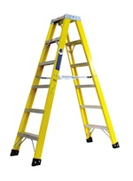

Employee Training Program
Work through this training program screen-by-screen. After you have reviewed each screen, click the arrow along the right side of the screen or use your keyboard arrows.
There are quiz questions throughout the training. You must answer each question correctly to continue with the training program.
Fall protection covers any area at heights where there is the danger of falling from a higher level to a lower level.
It also includes tripping / slipping / falling on a single level such as the ground. Keeping workspaces free of debris and obstructions reduces the risk of this type of fall.
Fall protection procedures are meant to ...
A Fall Hazard Analysis can be performed by a:
/
#